Kolortec · margen del blog y «Seguí leyendo»
Capturas del sitio real (dev local localhost:5288, rama fix/kolortec-blog con lo staged), 19-oct-2026, Chrome + Playwright. Clic en cualquier captura para verla al 100 %. Esta página no elige: muestra.
De dónde sale el ancho. No hay un contenedor único: cada sección lleva su propio lg:px-40 (160px desde 1024px), en 20 archivos. Además: .kt-container y .kt-detail-tabs (padding-inline:10rem, detalle de producto), .kt-footer-gal / -cols / -legal (10rem + bleed, en src/index.css), y en la home lg:pl-[calc(10rem+…)] / lg:px-[calc(10rem+…)] (Shop, Support, Join). El header ya está a 80px a 1440 (lg:px-10 xl:px-20 2xl:px-40: sube a 160 recién desde 1536px).
Ojo: en el código actual sólo el detalle de la nota usa lg:px-20. El índice /soporte/guias sigue en lg:px-40 (160px, medido). Y el footer de la nota sigue a 160px.
Márgenes medidos a 1440 (getBoundingClientRect + padding, izq / der), antes de inyectar
| Página | Header | Contenido | Footer | Con A inyectado |
|---|---|---|---|---|
| Home | 80 / 80 | 160 / 160 en todas las secciones (Shop: 160 / 620) | 160 / 160 | todo a 80 (Shop 80 / 620); alto 4682 → 4722 |
| Catálogo | 80 / 80 | 160 / 160 (h1 en x=160) | 160 / 160 | 80 / 80; alto 1869 → 1919 |
| Producto | 80 / 80 | 160 / 160 (.kt-container) | 160 / 160 | 80 / 80 |
| Blog índice | 80 / 80 | 160 / 160 (h1 en x=160) | 160 / 160 | 80 / 80 |
| Blog nota | 80 / 80 | 80 / 80 (h1 en x=80) | 160 / 160 | contenido igual; footer a 80 |
Sin scroll horizontal en ninguna captura (scrollWidth = 1440 y 390).
Decisión 1 · margen lateral
A80px por lado en TODO el sitio: secciones, contenedor de producto y footer (CSS inyectado que pasa los gutters de 10rem a 5rem desde 1024px).
BComo está hoy: 80px sólo en el blog, 160px en el resto. En cada página, B arriba y A abajo.
Home /
BSecciones a 160px; header a 80. ver al 100 %
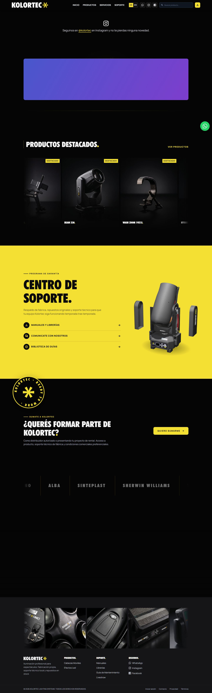
ATodas las secciones y el footer a 80px, alineados con el header. ver al 100 %
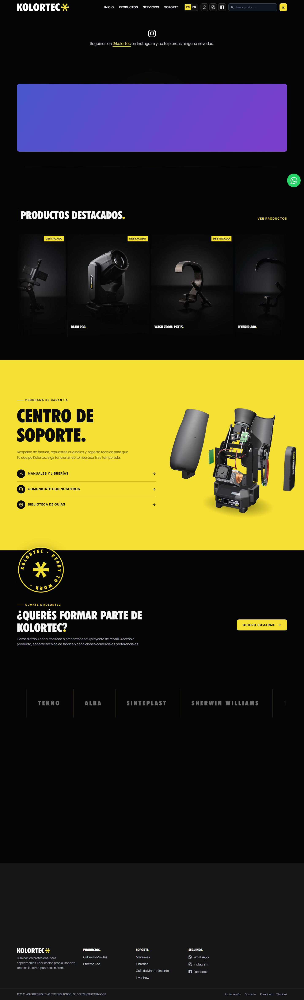
Catálogo (categoría) /products/cabezas-moviles
BTítulo y grilla a 160px. ver al 100 %
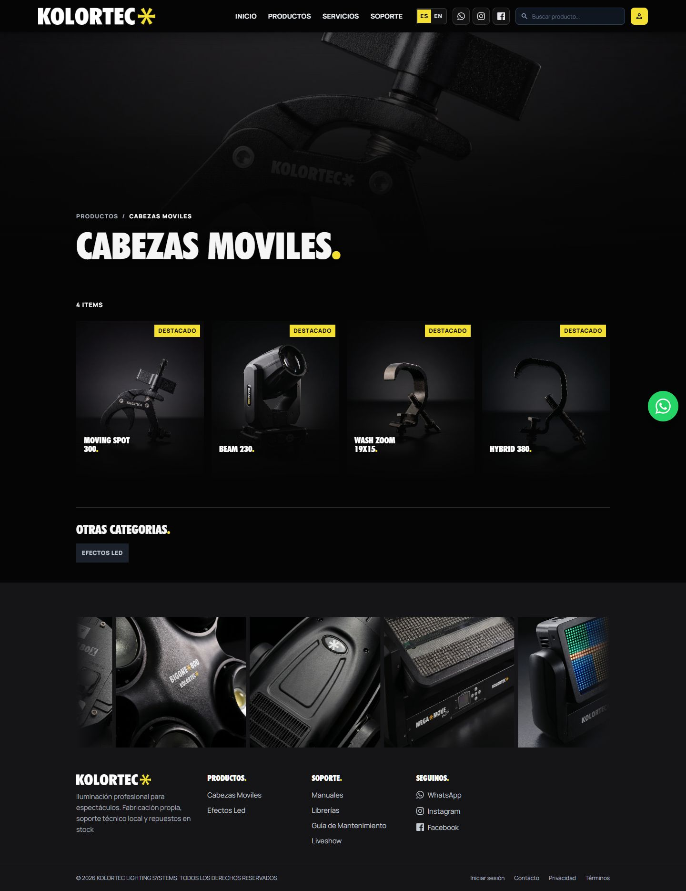
ATítulo y grilla a 80px: la grilla gana 160px de ancho. ver al 100 %
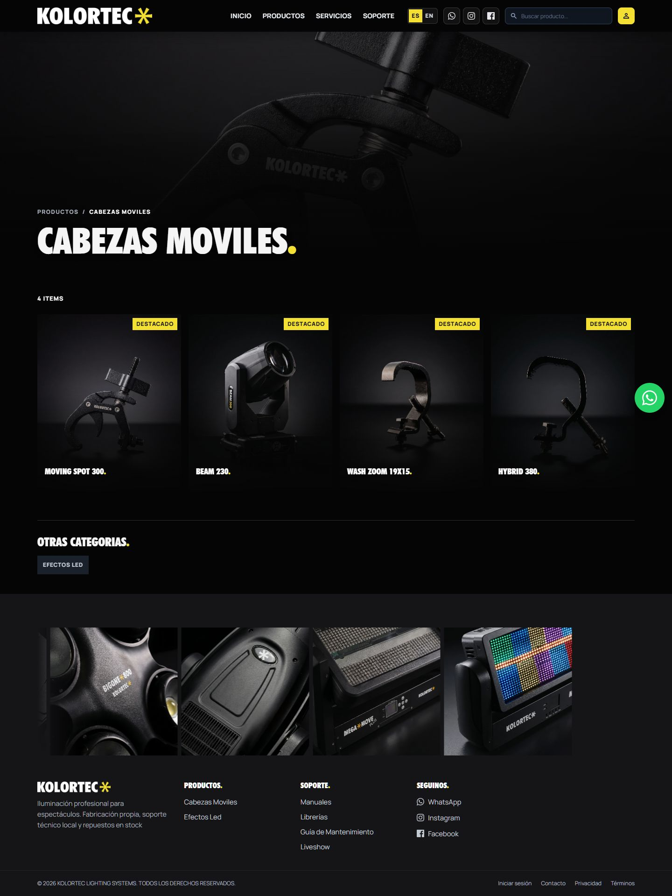
Producto /producto/moving-spot-300
BGalería, ficha, relacionados y footer a 160px. ver al 100 %
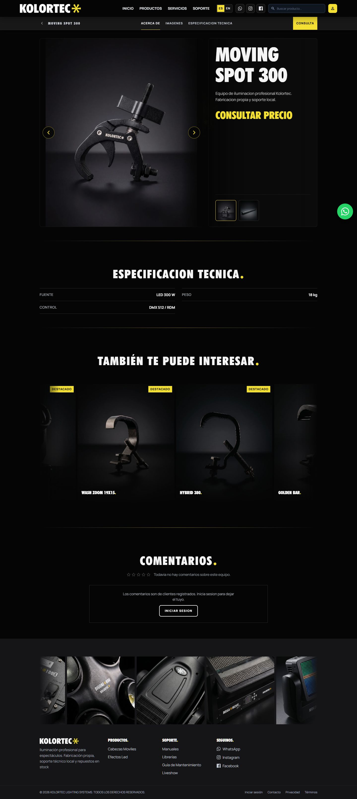
AGalería, ficha, relacionados y footer a 80px. ver al 100 %
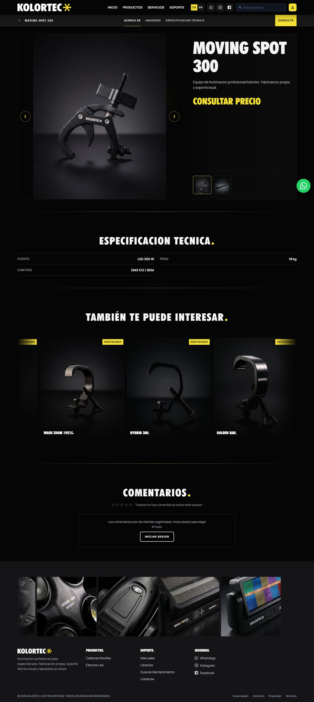
Blog · índice /soporte/guias
BHoy el índice está a 160px (lg:px-40), no a 80. ver al 100 %
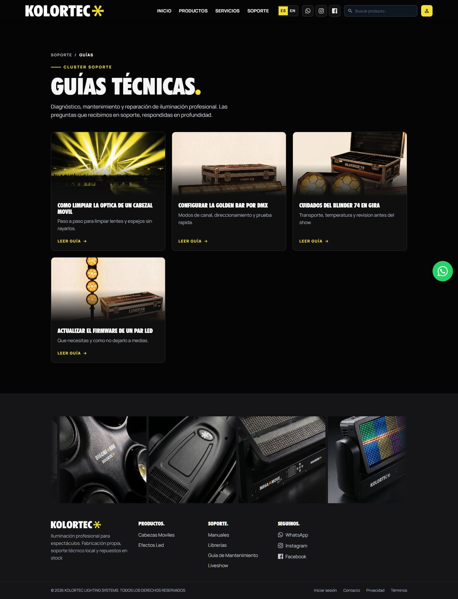
AÍndice a 80px, igual que la nota. ver al 100 %
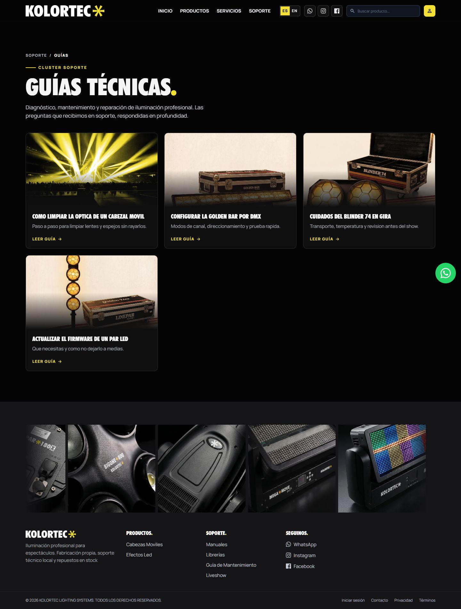
Blog · nota /soporte/guias/limpieza-optica
BContenido a 80px; el footer sigue a 160px. ver al 100 %
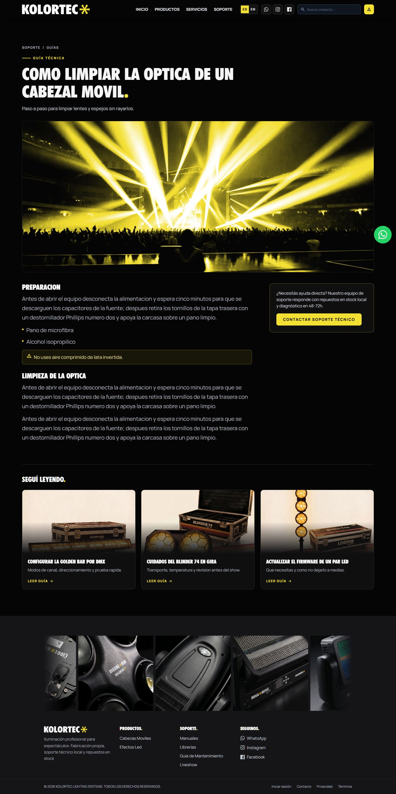
AContenido igual; sólo el footer pasa a 80px. ver al 100 %
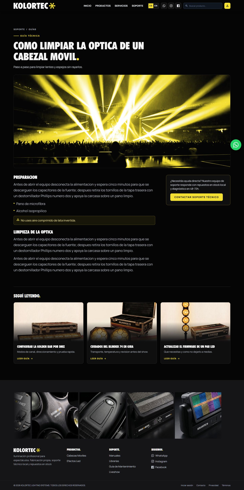
Decisión 2 · «Seguí leyendo» en celular (390px)
Detalle de nota, página completa a 390. Alto medido de la sección «Seguí leyendo» (título + tarjetas) con las notas simuladas.
3Tres tarjetas con foto apiladas, como hoy. Sección: 1139px (tarjetas 344 + 344 + 322). Página: 3831px. ver al 100 %
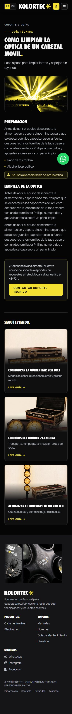
2Dos tarjetas: la tercera oculta debajo de sm (CSS inyectado). Sección: 798px (−341px). Página: 3489px. ver al 100 %
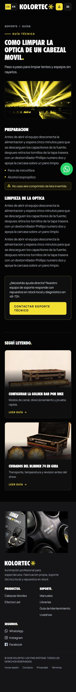
Entre sm y lg el código ya oculta la tercera (sm:max-lg:hidden). La opción 2 lleva eso también a menos de 640px.
Qué se simuló
- Producción no se tocó.
api.soytiendita.storeytranslate.soytiendita.storebloqueados conpage.route(0 pedidos). El dev server vivo apunta a la API local (api.dev.tiendita.com.ar); de ahí salen hero, galería del footer, marcas y web-config. - Blog (
/public/blog): 4 notas inventadas con el contenido de las fixtures del QA; portadas = fotos depublic/assets. - Productos y categorías (
/public/productos,/public/categorias): la cuenta local tenía datos de otra tienda de prueba (bolsos, camperas). Se simularon 8 productos con nombres de iluminación y fotos depublic/assets/products; esas fotos son de grampas y accesorios, así que nombre y foto no coinciden. - Animaciones de entrada forzadas a visibles para que la captura salga completa, igual en A y en B.